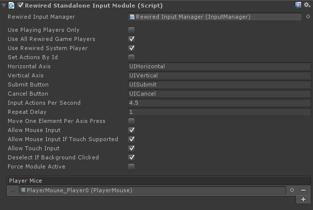

Rewired Standalone Input Module
- Overview
- Quick Setup
- Event System and Component
- Rewired Actions
- Rewired Input Manager Settings
- Inspector Options
- Player Mouse
- Troubleshooting
- FAQ
Overview
This is an EventSystem input module component that can be used in place of Unity's StandaloneInputModule. The purpose of this module is to allow Rewired to control navigation of Unity's UI instead of the default UnityEngine.Input.
When you install or upgrade Rewired, it will automatically install the RewiredStandaloneInputModule.cs file in the Rewired/Integration/UnityUI folder provided you are running Unity 4.6 or greater.
This component must be added to the EventSystem in the scene and the default StandaloneInputModule must be disabled or removed. This will allow the UnityUI system to receive input from Rewired. You must also create the appropriate Actions in the Rewired Editor to match the Actions listed in the RewiredStandaloneInputModule and assign these Actions to one or more Controller Maps then assign those to one or more Players.
Quick Setup
- Create your Unity UI as per normal practice.
- Select the EventSystem object in the scene.
- Disable the StandaloneInputModule component on the EventSystem object.
- Add the RewiredStandaloneInputModule component to the EventSystem object.
- Customize the settings on the RewiredStandaloneInputModule if desired.
- Open the Rewired Editor and create an Action for each of the controls listed in the RewiredStandaloneInputModule. By default, these are "UIHorizontal", "UIVertical", "UISubmit", and "UICancel." The names you create in the Rewired Editor must match exactly those in the RewiredStandaloneInputModule's inspector. If you'd like to change the names of these Actions, you may do so, but they must match between the Rewired Editor and the RewiredStandaloneInputModule.
- Create one or more Joystick, Keyboard, or CustomController maps with the Actions you created above assigned to elements.
- Assign the controller maps map(s) to one or more Player.
- Adjust the settings in the RewiredStandaloneInputModule to change which Player(s) input is drawn from and other options.
Now your Unity UI should be controlled by Rewired instead of Unity's input system.
Event System and Component
You can either create a normal Unity Event System and replace the Standalone Input Module with the Rewired Standalone Input Module component or you can create a Rewired Event System from either of the menu items:
- GameObject -> Create Other -> Rewired -> UI -> Rewired Event System
- Window -> Rewired -> Create -> UI -> Rewired Event System
Rewired Actions
Four Actions must be set up in the Rewired Input Manager and the RewiredStandaloneInputModule in order to control the UI with a keyboard or joystick. These four Actions must have names that match exactly in both the Rewired Input Manager and the RewiredStandaloneInputModule.
- Horizontal Axis - The Action that will control Left/Right movement in the UI.
- Vertical Axis - The Action that will control Up/Down movement in the UI.
- Submit - The Action that submits a button.
- Cancel - The Action that cancels.
The actual names you use are up to you. Of course these Actions must also be assigned to one or more keyboard or joystick maps and assigned to a Player to be functional.
If you want to use mouse pointers exclusively to interact with the UI, you can set all these Actions to blank strings.
Alternately, you can set Actions by id by enabling "Set Actions By Id."
NOTE: It is HIGHLY recommended that you create unique menu-only Actions for these UI controls in a separate controller map category from your game Actions. If you use your in-game actions such as "Move Horizonal" or "Jump" for these UI controls, you run the risk of allowing the user to render the UI unusable because they removed an assignment for one of these game Actions which was also controlling the UI.
The settings in the RewiredStandaloneInputModule will determine which Players can control the UI. If you check "Use All Rewired Game Players", all Players besides the System Player that have a map configured with these UI Actions will be able to control the UI. If you check "Use Rewired System Player", the same will be true for the System Player. If instead you only want specific Players to control the UI, you can set these Player Ids individually.
If the UI control speed with a Joystick seems too slow or fast, adjust the "Input Actions Per Second" setting.
Rewired Input Manager settings
This image shows the 4 actions that have been set up for controlling the UI with the keyboard or a joystick.
Unknown Controllers:
It is recommended that you create a map for the Unknown Controller. This way, if a user attaches a controller Rewired does not recognize, they should still be able to control the UI reasonably well.
There is no way to know what axes or buttons will actually be available on these controllers, but you can make some basic assumptions that should allow most controllers to control the UI.
- Axis 0: Map to your "UIHorizontal" Action. (Axis 0 is almost always the horizontal axis on the first joystick)
- Axis 1: Map to your "UIVertical" Action and Invert this axis. (Axis 1 is almost always the vertical axis on the first joystick and is always inverted.)
- Button 0: Map to your "UISubmit" Action.
- Button 1: Map to your "UICancel" Action.

Of course, the above are only recommendations. You can set up your control scheme however you decide.
Inspector Options:

| Rewired Input Manager | (Optional) Link the Rewired Input Manager here for easier access to Player ids, etc. |
| Use Playing Players Only | Allow only Players with Player.isPlaying = true to control the UI. |
| Use All Rewired Game Players | Use all Rewired game Players to control the UI. This does not include the System Player. If enabled, this setting overrides individual Player Ids set in Rewired Player Ids. |
| Use Rewired System Player | Allow the Rewired System Player to control the UI. |
| Rewired Player Ids | A list of Player Ids that are allowed to control the UI. If Use All Rewired Game Players = True, this list will be ignored. |
| Set Actions By Id | If enabled, Action Ids will be used to set the Actions. If disabled, string names will be used to set the Actions. |
Horizontal Axis |
Name of the horizontal axis for movement (if axis events are used). |
| Vertical Axis | Name of the vertical axis for movement (if axis events are used). |
| Submit Button | Name of the action used to submit. |
| Cancel Button | Name of the action used to cancel. |
| Input Actions Per Second | Number of selection changes allowed per second when a movement button/axis is held in a direction. |
| Repeat Delay | Delay in seconds before vertical/horizontal movement starts repeating continouously when a movement direction is held. |
| Move One Element Per Axis Press | Makes an axis press always move only one UI selection. Enable if you do not want to allow scrolling through UI elements by holding an axis direction. |
| Allow Mouse Input | Allows the mouse to be used to select elements. |
| Allow Mouse Input If Touch Supported | Allows the mouse to be used to select elements if the device also supports touch control. |
| Allow Touch Input | Allows touch input to be used to select elements. |
| Force Module Active | Forces the module to always be active. |
| Player Mice | Player Mice allowed to interact with the UI. Each Player that owns a Player Mouse must also be allowed to control the UI or the Player Mouse will not function. |
Player Mouse:
Background:
Unity's Standalone Input Module supports 3 methods of user interaction:
- Mouse pointer interaction.
- Touch interaction.
- Keyboard, joystick, other interaction using the "Selectable" system.
Mouse pointer and touch interaction work in a similar way, using a "pointer" screen position and "clicks" to send enter, exit, click, drag, etc. events to UI components. The pointer position must be over a UI element for the event to be sent.
Keyboard, joystick, and other interaction work differently from mouse/touch in that they do not use a "pointer", but instead use Unity's "Selectable" system which is part of the Event System and the individual UI components. The Event System supports a single "currently selected" GameObject which acts as the highlighted GameObject. UI element navigation happens when a UI element receives a navigation move event. Submit and Cancel happens when the currently selected GameObject is sent a Submit or Cancel event when the correct button/key is pressed.
Overview:
The Rewired Standalone Input Module allows you to use a Player Mouse to control a software mouse pointer using any input device to interact with the UI. This can be useful if you want to be able to interact with a UI using a gamepad but do not want the limitations of the "Selectable" UI system. You can also have multiple separate mouse pointers that can interact with the UI simultaneously*. (See important limitations / issues.)
You do not have to use a Player Mouse for mouse pointer interaction to work. If you do not assign a Player Mouse, the default hardware mouse will be used which works just like the Standalone Input Module.
Using a Player Mouse to control the UI:
- See Player Controllers and Player Mouse to understand the concepts.
- Create a GameObject with a Player Mouse component and configure its Player and element Actions.
- Create a pointer GameObject and drive it from the Player Mouse's screen position.
- Add the Player Mouse in the Rewired Standalone Input Module inspector (or add it through scripting at runtime).
- Make sure the Player that owns the Player Mouse is allowed to control the UI. (See inspector options for setting the Players that can control the UI.)
Using multiple Player Mouse pointers:
You can use multiple Player Mice to drive multiple mouse pointers that can all interact with the UI.* (See important limitations.) Simply create multiple Player Mice, set them up for each Player, and assign them to Player Mice field in the inspector.
Examples:
Player Pointer Event Data:
The Rewired Standalone Input Module will send a PlayerPointerEventData object to all mouse pointer event handlers (Buttons, your scripts that implement the pointer event handler interfaces, etc.) If the handler script is written to support it, you can get Player, button index, and even source Player Mouseinformation from each event. See the Player Mouse Unity UI example for a demonstration.
*Important Limitations / Issues:
Unity's UI controls were not written to support interaction from multiple sources at the same time. Generally, UI controls work when being interacted with by multiple pointers, but there are some issues/artifacts:
- Selectable (Button, Toggle, Slider, etc.) highlighting shows artifacts when multiple pointers interact with it simultaneously. If two mouse pointers are pressing on a Button and one pointer moves out of the Button's area, a PointerExit event will be sent to the Button and it will no longer be highlighted. The pointer remaining over the Button can be clicking on the button, but the visual Button graphic will not show any change as the Button is clicked. The Button will still send events, but the visual feedback will be lost.
- Mutiple pointers trying to drag on a UI slider at the same time will yield unpredictable results.
- Probably others.
Rewired cannot overcome these inherent limitations of Unity UI. The only way to remedy these issues would be to replace all UI components and their base classes with new versions that are multi-pointer aware. This is outside the scope of Rewired, which as input system and not a replacement UI system.
Troubleshooting:
Before contacting support for RewiredStandaloneInputModule issues, be sure your issue has to do with Rewired and not just Unity's UI system in general.
- The Rewired Standalone Input Module does nothing besides control input in Unity's UI system by changing the underlying input source from UnityEngine.Input to Rewired. If you are having difficulties with controlling the UI, please make sure your problems aren't really pertaining to usage of Unity's UI system before contacting support. I frequently get questions that are actually issues with Unity UI setup and have nothing to do with Rewired. When in doubt, test with the StandaloneInputModule instead of the RewiredStandaloneInputModule. If the problem persists, you know that the issue is not with Rewired but rather something you've missed when setting up Unity UI.
Please refer to the Unity documentation on the StandaloneInputModule for basic usage.
Problem: Receiving duplicate mouse clicks when clicking on a UI button
Do not assign UI Submit or Cancel Actions to Mouse Left Button or Mouse Right Button or you will receive double-clicks evey time the mouse button is pressed over a button. The mouse button click on a UI element is based on mouse cursor position and does not use the Action system.
Problem: Unity UI navigation with joystick or keyboard doesn't work
While this is a general Unity UI usage issue and not a Rewired issue in any way, because I've received so many support requests where this ends up being the answer, I've decided to post it here.
- Unity UI cannot be controlled by keyboard or joystick unless you specify a current or starting Selectable GameObject in the Unity UI EventSystem.
Unity UI requires a Selectable to be selected before any navigation will work for joystick or keyboard, otherwise it has no starting point from which to navigate when you press a key or a stick direction. You must either set the First Selected field in the inspector of the EventSystem component, or set the current selected GameObject via scripting as shown below.
using UnityEngine.EventSystems;
void SetSelected(GameObject selectableObject) {
// Set the currently selected GameObject
EventSystem.current.SetSelectedGameObject(selectableObject);
}
Please refer to the Unity documentation for information on how to use Unity UI.
FAQ:
Does it support multi-player UIs?
Only partially through the use of Player Mouse pointers.
It does not support multi-player UI navigation using the Unity UI Selectable system. (The system used for joystick/keyboard navigation.)
The issue here is Unity's UI controls and Event System do not support more
than one simultaneous "selected" object. Their entire system is designed
around the concept of one single user and one selection at a time. The Rewired Standalone Input Module cannot overcome the inherent limitations of Unity's UI system. Supporting multiple simultaneous Selectables would require a complete
rewrite of Unity's Event System and all interactable UI components including Button, Toggle, Slider, etc., and their base classes with new versions that are multi-pointer aware including a new highlighting/transition system. This is outside the scope of Rewired, which is an input system and not a replacement UI system.